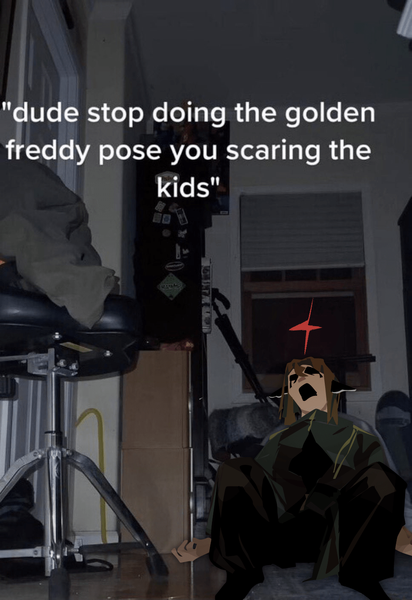

im dumping all ptc-related doodles here
creation date: dec 29-jan 22
characters featured: esme, enzo, otis
i've hit a bit of a roadblock in ptc's plot writing recently and it's made my desire for big story-related arts plummet. pantser woes, i'm surprised it didnt happen sooner. i think i need to take a long pause from thinking about ptc seriously lol. anyhow, here r some more unserious lighthearted doodles :3
characters featured: esme & juro
characters featured: archer
characters featured: juro
these r closeups for the 1st page
i subtly change esme's hair every few months, this time is the last time i prommy